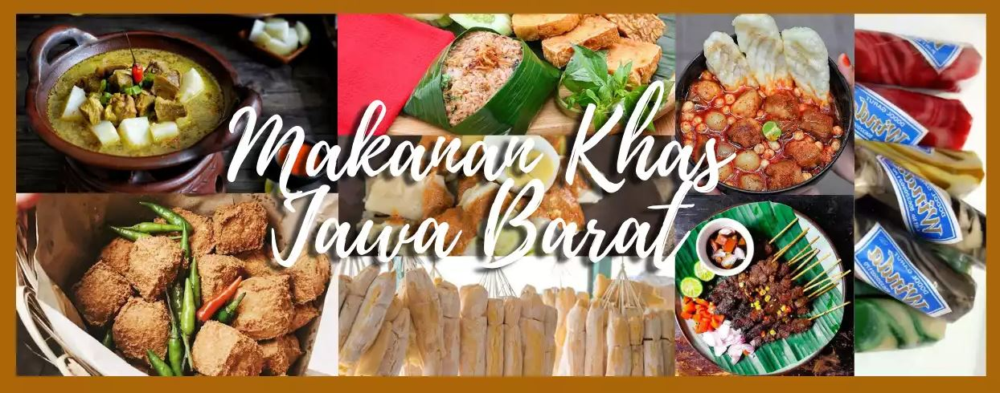
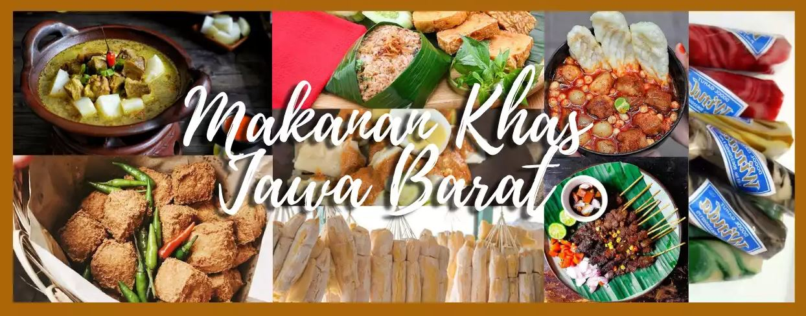

Makanan Jawa Barat
Makanan Jawa Barat terkenal dengan enak dan keanekaragamannya, Berikut adalah makanan makanan khas jawa barat
Next Page.
Makanan Jawa Barat terkenal dengan enak dan keanekaragamannya, Berikut adalah makanan makanan khas jawa barat
